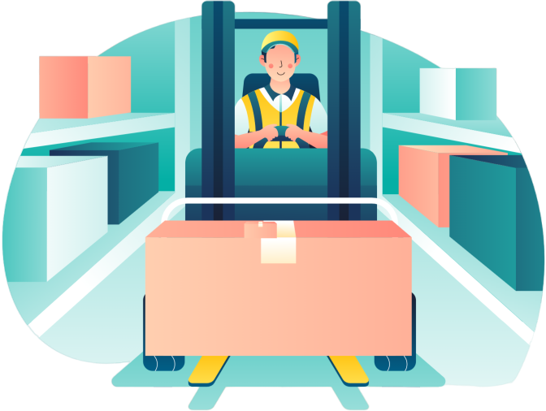

<style>
    .uk-navbar-container {
        border: 1px solid #5a79ba; /* Define el grosor y el color del borde */
        border-radius: 5px; /* Opcional: agrega bordes redondeados */
    }
    .uk-navbar-divider {
        border: 1px solid #5a79ba; /* Define el grosor y el color del borde */
        border-radius: 5px; /* Opcional: agrega bordes redondeados */
    }
    .uk-container {
        display: flow-root;
        box-sizing: content-box;
         max-width: unset; 
        margin-left: auto;
        margin-right: auto;
        padding-left: 15px;
        padding-right: 15px;
    }
    .navbar-content {
        display: flex;
        justify-content: space-between;
        width: 100%;
    }
    .uk-logo {
        padding: 20px;
    }
    .navbar-content .uk-navbar-item:not(:last-child) {
        margin-right: 10px; /* Ajusta el espacio entre los elementos de navegación */
    }
    .uk-search-input {
        width: 150px; /* Establece un ancho inicial para el campo de búsqueda */
        transition: width 0.4s; /* Agrega una transición suave al ancho */
        border-radius: 15px; /* Añade bordes redondos al formulario cuando está en foco */

    }
    .uk-search-default {
        width: 150px; /* Ancho inicial para el formulario */
        transition: width 0.4s; /* Agrega una transición suave al ancho */
        border-radius: 15px; /* Añade bordes redondos al formulario cuando está en foco */

    }
    .uk-search-default:focus-within {
        width: 250px; /* Ancho aumentado cuando el formulario o alguno de sus elementos recibe foco */
        background-color: white;

    }

    .uk-search-default:focus-within .uk-search-input {
        width: 250px; /* Ancho del input cuando el formulario recibe foco */
    }
    .uk-comment-avatar {
        width: 40px; height: 40px;
        border-radius: 50%; /* Hace que la imagen tenga una forma redonda */
    }
</style>

<nav class="uk-navbar-container" style="background-color: #131313">
    <div class="uk-container">
        <div uk-navbar>
            <div class="uk-navbar-left uk-animation-slide-left" style="-webkit-animation-duration: 3.5s;animation-duration: 3.5s;">
                <div class="navbar-content">
                    <div style="display: flex;justify-content: center;">
                        <a class="uk-navbar-item uk-logo" href="#" aria-label="Back to Home">
                            
                        </a>
                    </div>

                    <div class="uk-navbar-divider"></div>

                    <div style="display: flex;justify-content: center;margin-left: 20px;">
                        <div class="uk-navbar-item">
                            <H2 style="color: white;">QRStockMate</H2>
                        </div>
                    </div>
                </div>
            </div>

            <div class="uk-navbar-right uk-animation-slide-right " style="-webkit-animation-duration: 3.5s;animation-duration: 3.5s;">
                <form class="uk-search uk-search-default">
                    <a href="" class="uk-search-icon-flip" uk-search-icon></a>
                    <input class="uk-search-input" type="search" placeholder="Search" aria-label="Search">
                </form>
                <a href="#" uk-icon="icon: bell"></a>
                <div class="uk-width-auto">
                    
                </div>
            </div>
        </div>
    </div>
</nav>
